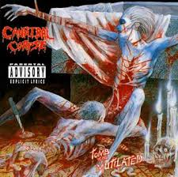
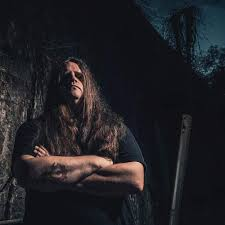
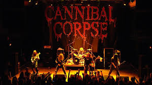

Cannibal Corpse es una banda de death metal formada en 1988 en Buffalo, Nueva York. Su música extrema, acompañada de letras y portadas brutales, los convirtió en una de las bandas más icónicas e influyentes del género.
Desde sus inicios, la banda fue influenciada por el thrash metal de los 80 y por grupos pioneros del death metal como Death, Possessed y Morbid Angel. Con el tiempo, consolidaron un sonido agresivo y técnico que los hizo destacar en la escena metalera.
Su álbum debut Eaten Back to Life (1990) marcó el inicio de su brutal carrera. Sin embargo, fue con Tomb of the Mutilated (1992) que alcanzaron reconocimiento mundial, gracias a canciones como Hammer Smashed Face, considerada un himno del death metal.
Debido a sus letras explícitas y portadas gráficamente violentas, la banda ha sido censurada en varios países, incluyendo Alemania y Rusia. En algunos estados de EE.UU., sus discos han sido objeto de controversia por su contenido extremo.
En 1995, el vocalista original Chris Barnes dejó la banda y fue reemplazado por George "Corpsegrinder" Fisher, quien aportó un estilo vocal aún más agresivo y una presencia escénica impactante. Desde entonces, Cannibal Corpse ha seguido lanzando discos sin perder su brutalidad característica.
Con más de 30 años de carrera, Cannibal Corpse sigue siendo una de las bandas más influyentes del death metal. Su energía en vivo y su brutalidad han dejado una marca imborrable en el género, influenciando a nuevas generaciones de músicos extremos.
